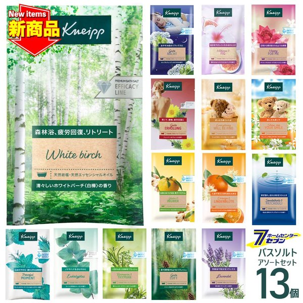
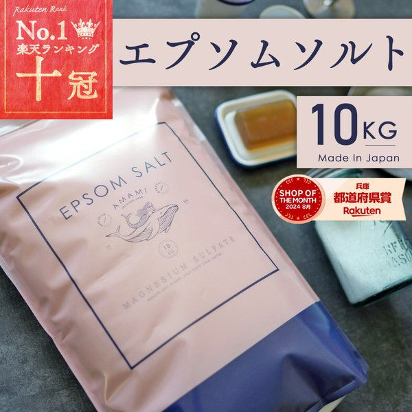
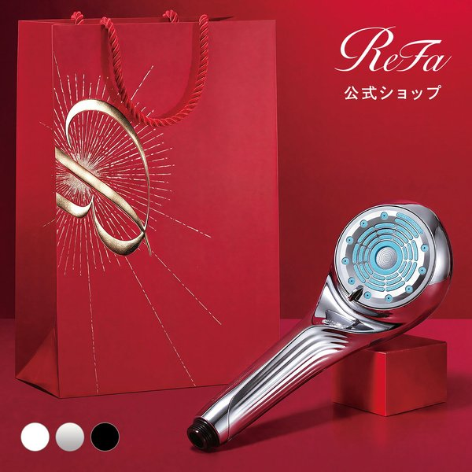
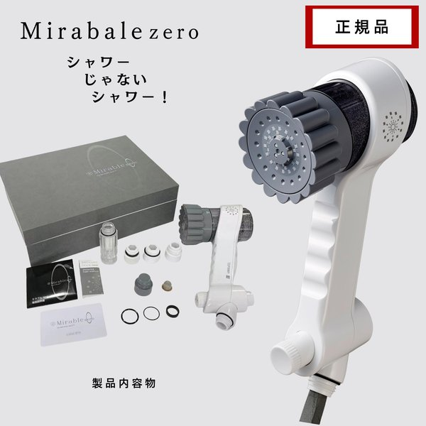
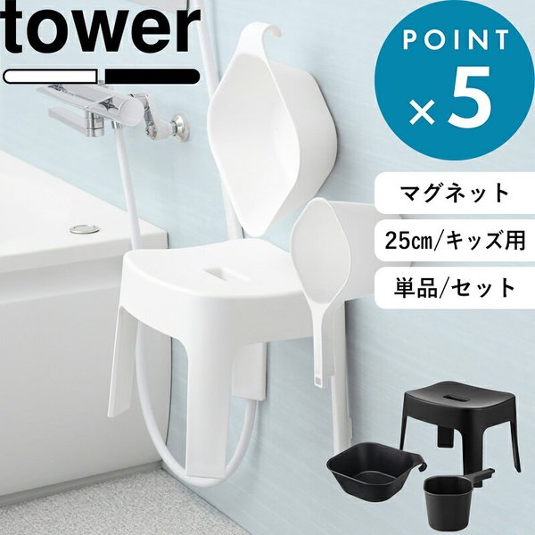
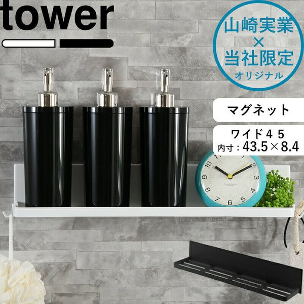
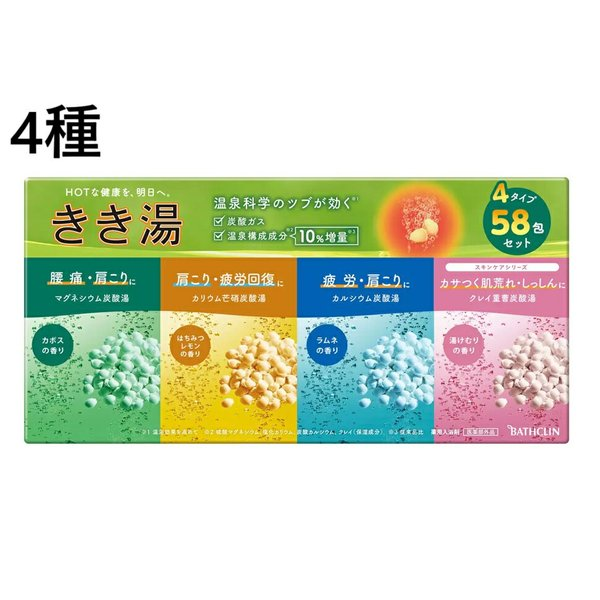
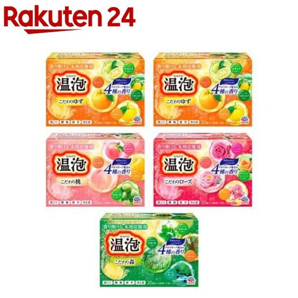
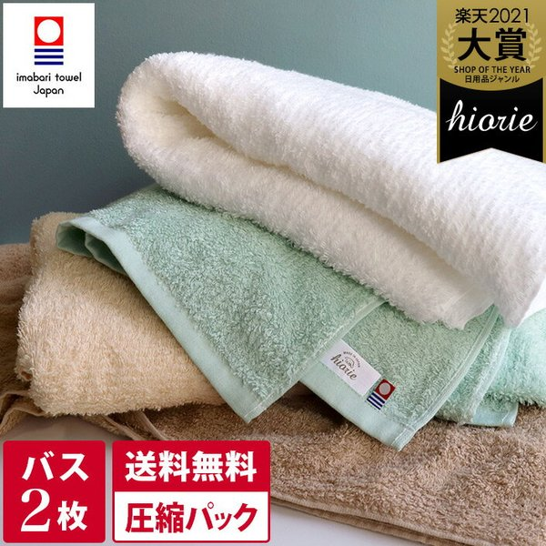

【2026年最新】冬の冷え・疲れを芯からほぐす！人気入浴剤＆ナノバブルシャワーヘッドおすすめ10選
寒い季節は、お風呂の時間がいちばんの癒やし。とはいえ毎日のことだからこそ、入浴剤やシャワーヘッドを少し見直すだけで、冷えや疲れの取れ方がぐっと変わります。
炭酸やマグネシウムで温浴効果を高める入浴剤、肌当たりのやさしいファインバブルシャワー、床をヌメリから守るマグネット収納まで、冬のバスタイムを快適にするアイテムを揃えました。
本記事では、楽天市場でレビュー高評価の入浴剤＆シャワーヘッド＆バス収納10選を、実際の価格と評価つきで写真付き紹介します。
- おすすめ10選 スペック・特徴比較表
- BEST 1｜中性重炭酸入浴剤 90錠／120錠（公式店）
- BEST 2｜バスソルト 13個アソートセット（50g×13個）
- BEST 3｜エプソムソルト 10kg 66回分
- BEST 4｜ファインバブルU シャワーヘッド ReFa FINE BUBBLE U
- BEST 5｜ミラブルzero シャワーヘッド 正規品
- BEST 6｜マグネット風呂イス tower SH25
- BEST 7｜マグネットバスルームラックワイド45 タワー
- BEST 8｜きき湯 バラエティセット 58包
- BEST 9｜温泡 炭酸湯 5個セット（20錠×5個入）
- BEST 10｜バスタオル 2枚同色セット（約60×120cm）
- 【読者負担0円】買わなくても得する無料サービス
- まとめ：生活をラクにする最初の一歩
| 順位 | 商品名 | ブランド | 最大の特徴・おすすめ理由 | 総合評価 |
|---|---|---|---|---|
| BEST 1 | 中性重炭酸入浴剤 90錠／120錠（公式店） | BARTH | 炭酸ガスが湯中に長くとどまる | 4.68 ★ |
| BEST 2 | バスソルト 13個アソートセット（50g×13個） | クナイプ（KNEIPP） | 13種類の香りを選べる | 4.78 ★ |
| BEST 3 | エプソムソルト 10kg 66回分 | エプソムソルト（硫酸マグネシウム） | 10kgで約66回分の大容量 | 4.77 ★ |
| BEST 4 | ファインバブルU シャワーヘッド ReFa FINE BUBBLE U | ReFa（リファ） | ファインバブルで肌がしっとり | 4.61 ★ |
| BEST 5 | ミラブルzero シャワーヘッド 正規品 | ミラブル（MIRABULL） | ウルトラファインバブルのやさしい水流 | 4.49 ★ |
| BEST 6 | マグネット風呂イス tower SH25 | 山崎実業（tower） | 壁に貼るだけで床掃除がラク | 4.77 ★ |
| BEST 7 | マグネットバスルームラックワイド45 タワー | 山崎実業（tower） | ボトルを浮かせて掃除がラク | 4.81 ★ |
| BEST 8 | きき湯 バラエティセット 58包 | バスクリン | 炭酸ガスで温浴効果を高める | 4.84 ★ |
| BEST 9 | 温泡 炭酸湯 5個セット（20錠×5個入） | アース製薬（温泡） | 炭酸バブルの発泡感が気持ちいい | 4.69 ★ |
| BEST 10 | バスタオル 2枚同色セット（約60×120cm） | 今治タオル | 今治タオルの吸水性と肌触り | 4.53 ★ |
中性重炭酸入浴剤 90錠／120錠（公式店）

湯に溶かすと炭酸ガスが長く残る中性重炭酸入浴剤。炭酸の力で血行を促し、冷えや肩こりで重たい体をほぐします。無香料・塩素除去処方で、毎日の入浴に取り入れやすいのもポイントです。 楽天市場での実売価格は約6,600円（2026年11月時点）。
- 炭酸ガスが湯中に長くとどまる
- 無香料・塩素除去で毎日使いやすい
- 冷えや肩こりのケアに向く
- 1回あたりの単価はやや高め
バスソルト 13個アソートセット（50g×13個）

ドイツ生まれのクナイプのバスソルトを、13種類まとめて試せるアソートセット。その日の気分で香りを選べるので、冬の入浴が小さな楽しみになります。就寝前のリラックス用途にも。 楽天市場での実売価格は約2,279円（2026年11月時点）。
- 13種類の香りを選べる
- 少量ずつ試せるトライアル仕様
- 就寝前のリラックスに最適
- 種類は選べない（おまかせ）
エプソムソルト 10kg 66回分

硫酸マグネシウムを主成分とする入浴剤。湯がまろやかになり、体の芯まで温まりやすいと人気です。10kgの大容量でたっぷり使え、計量カップ付き。家族で毎日使うならこれが一番コスパよく続けられます。 楽天市場での実売価格は約3,780円（2026年11月時点）。
- 10kgで約66回分の大容量
- 湯がまろやかになり温まりやすい
- 計量カップ付きで使い方も簡単
- 保管場所と湿気対策が必要
ファインバブルU シャワーヘッド ReFa FINE BUBBLE U

きめ細かなファインバブルで、洗っているだけで肌がしっとりするシャワーヘッド。節水効果もあり、水道代の見直しにもなります。ヘッド交換だけで毎日のバスタイムが変わるので、冬の乾燥肌対策にも。 楽天市場での実売価格は約30,000円（2026年11月時点）。
- ファインバブルで肌がしっとり
- 節水で水道代の節約にも
- 工具なしで取り付け可能
- 本体価格は3万円前後
ミラブルzero シャワーヘッド 正規品

ウルトラファインバブルとトルネードスティックで、肌当たりのやさしい水流をつくるシャワーヘッド。塩素除去機能付きで、冬の乾燥や髪のパサつきが気になる人に向いています。止水ボタン付きで湯量の調整も簡単。 楽天市場での実売価格は約23,400円（2026年11月時点）。
- ウルトラファインバブルのやさしい水流
- 塩素除去機能搭載
- 手元の止水ボタンで節水
- 正規品かどうかの確認は必須
マグネット風呂イス tower SH25

浴室の壁にマグネットでくっつけられる風呂イス。床に置かずに浮かせて収納できるので、床のヌメリ掃除がぐっとラクになります。高さ25cmで立ち座りしやすく、キッズ用も選べます。 楽天市場での実売価格は約2,530円（2026年11月時点）。
- 壁に貼るだけで床掃除がラク
- マグネットでズレにくい
- キッズサイズも選べる
- 取り付け面がマグネット対応か確認を
マグネットバスルームラックワイド45 タワー

シャンプーやボディソープをまとめて浮かせられる幅45cmのマグネットラック。水はけのよい構造でヌメリが溜まりにくく、浴室の見た目もすっきりします。後付けできるので賃貸でも使いやすい。 楽天市場での実売価格は約4,290円（2026年11月時点）。
- ボトルを浮かせて掃除がラク
- 水はけがよくヌメリにくい
- 後付け可能で賃貸でもOK
- 壁面の強度と素材を事前に確認
きき湯 バラエティセット 58包

炭酸ガスの力で温浴効果を高める「きき湯」を、4種類まとめて楽しめる大容量セット。冬の冷え対策にちょうどよく、毎日1包ずつ使っても2か月近く持ちます。 楽天市場での実売価格は約2,790円（2026年11月時点）。
- 炭酸ガスで温浴効果を高める
- 4種類の湯色を楽しめる
- 58包入りでコスパがよい
- 香りは選べない
温泡 炭酸湯 5個セット（20錠×5個入）

発泡する炭酸タブレットが湯に溶け、シュワシュワの炭酸湯になる入浴剤。5種類の香りをまとめて試せるので、家族それぞれの好みで選べます。 楽天市場での実売価格は約4,880円（2026年11月時点）。
- 炭酸バブルの発泡感が気持ちいい
- 5種類の香りを選べる
- タブレットで計量いらず
- 1個あたりの湯量は守る必要あり
バスタオル 2枚同色セット（約60×120cm）

今治タオルのバスタオル2枚セット。吸水速乾で、冬の部屋干しでも乾きやすいのがうれしいところ。圧縮パックで届くので、収納場所にも困りません。 楽天市場での実売価格は約2,680円（2026年11月時点）。
- 今治タオルの吸水性と肌触り
- 速乾で冬の部屋干しにも
- 2枚セットで使い回しやすい
- 厚手すぎるタオルが好みの人には薄め
この記事の商品を買う前に、まずは無料で得する選択肢をチェック。どれも登録・利用は0円で、無料期間中に解約すれば料金はかかりません。読みたい雑誌がある人、ポイントを貯めたい人、アンケートなら気軽という人、それぞれに合うものを選べます。
初回31日無料・無料期間中に解約すれば0円 → 楽天ポイントモール｜登録無料で毎日ポイ活
買い物なしでもポイントが貯まる無料サービス → 楽天インサイト｜アンケートに答えてポイント
登録無料・すきま時間のアンケートで貯まる → 楽天カード｜年会費永年無料
新規発行・年会費ずっと0円 →
4つのサービスの違いと使い分けは「出費0円で得する！買わずにポイントが貯まる無料サービス厳選4選」でまとめています。
💡 まとめ：生活をラクにする最初の一歩
冬の冷え対策は、入浴剤で体の芯から温めるのが一番手軽です。まずはBARTHやエプソムソルトで温浴習慣をつくり、乾燥や肌荒れが気になるならシャワーヘッドの見直しを。収納グッズを足すと、掃除の手間まで減って毎日が少し楽になります。
楽天市場では「5と0のつく日」や「お買い物マラソン」などのキャンペーンに合わせて購入すると、ポイント還元が最大化してお得に手に入ります。ぜひチェックしてみてくださいね。